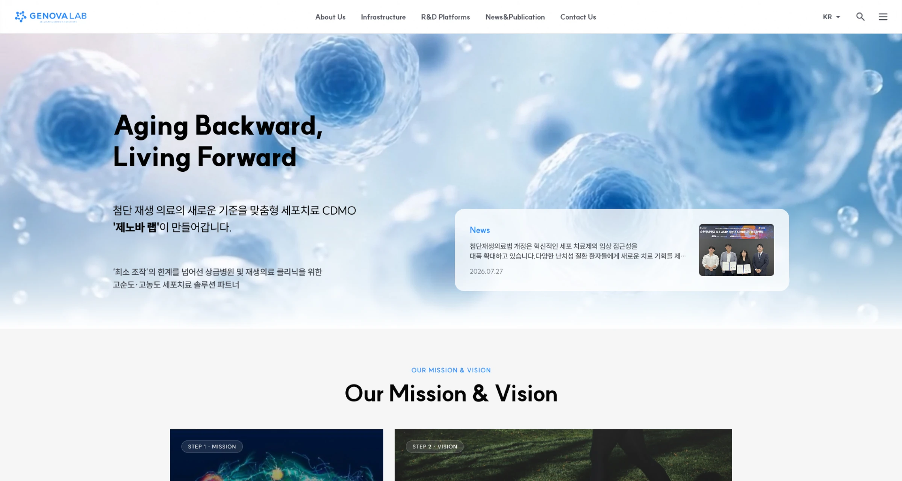
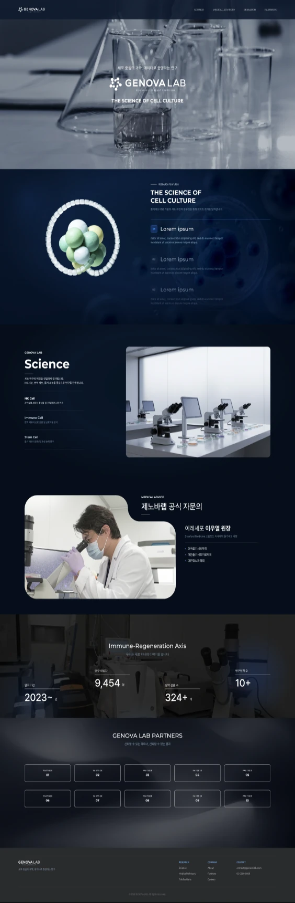
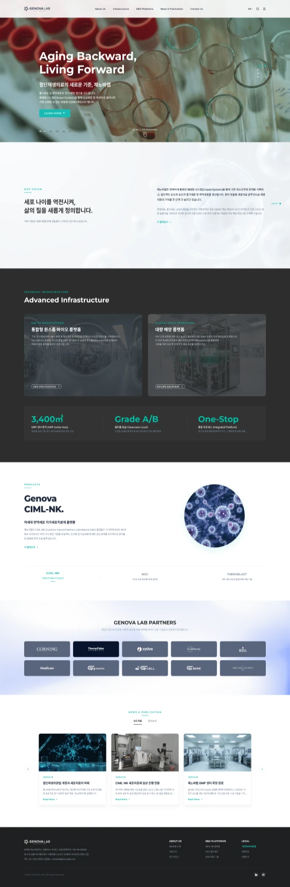
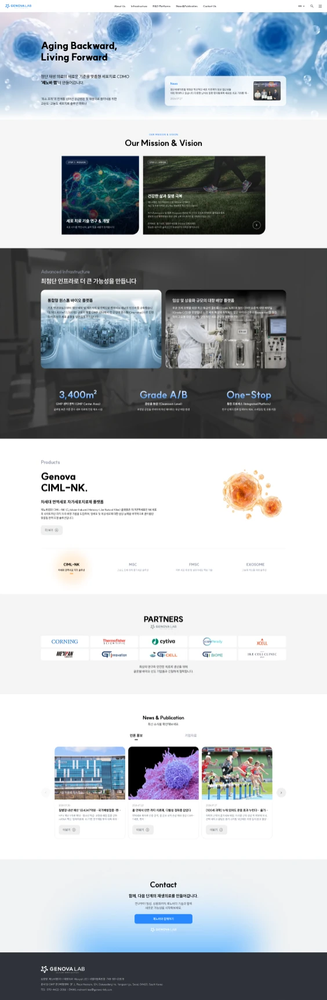
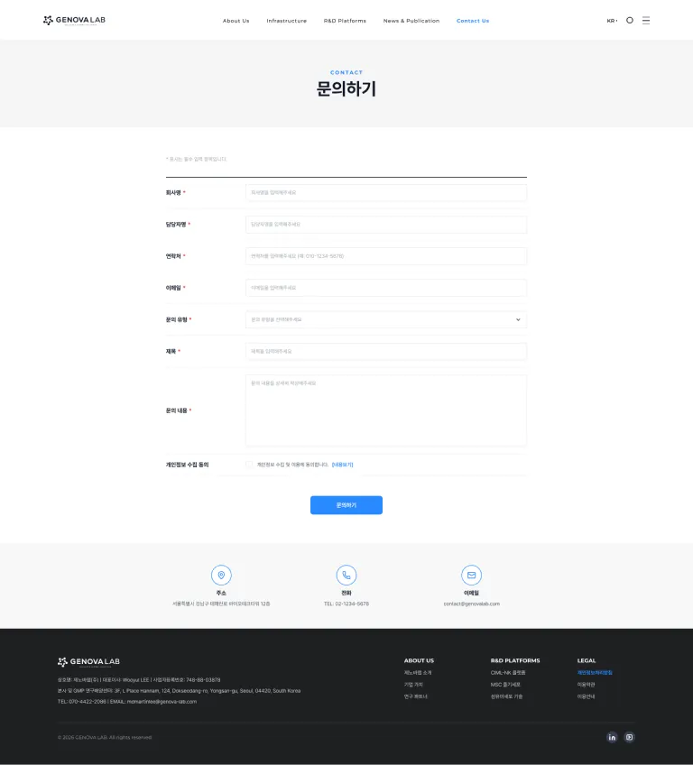

2026.09
GENOVA LAB
기존 홈페이지가 없던 줄기세포 연구소 제노바랩의, 연구 시설과 기술을 소개하는 첫 홈페이지

Background
제노바랩은 이레세포의원과 연계된 줄기세포 연구소로, 기존 홈페이지가 없었습니다. 이레세포 홈페이지에 이어 클라이언트 요청으로 새로 만들게 되었고, 연구소의 시설과 기술을 소개하면서 공지사항과 칼럼으로 일반 방문자에게도 신뢰를 주는 사이트를 목표로 했습니다.
클라이언트에게 받은 기획안에는 섹션 순서와 키워드만 있고 본문은 비어 있었습니다. 업체가 제공한 자료에서 핵심 내용을 골라 섹션을 채우고, 바이오 · 제약 기업 사이트를 참고해 부족한 구조를 보완했습니다.
Key Decisions
연구소의 차이를 보여주는 세 가지
연구소를 다른 곳과 구분하는 것은 시설, 품질, 그리고 시설을 운영하는 시스템이라고 봤습니다. 업체 자료에서 연구 시설 · 품질 등급 · 원스톱 공정을 골라 Advanced Infrastructure 섹션으로 묶었습니다.
신뢰감과 '세포'를 함께 보여주는 비주얼
어두운 첫 시안은 무겁다는 의견이, 밝은 실험실 사진 시안은 세포 연구소라는 특징이 드러나지 않는다는 의견이 있었습니다. 최종안은 블루 톤에 세포 이미지를 중심에 두어 신뢰감과 연구 분야를 한 화면에서 전달하도록 정리했습니다.
제품별로 나눈 정보
줄기세포 정보는 일반 방문자가 평소 접하기 어려운 내용입니다. 한 화면에 모두 담지 않고 CIML-NK · MSC · FMSC · EXOSOME 제품별 탭으로 나눠 한 번에 하나씩 읽히게 했습니다.
일반 방문자를 위한 서브페이지
공지사항과 언론보도를 별도 페이지로 두어 연구소 소식을 일반 방문자도 쉽게 찾아볼 수 있게 하고, 메인에는 연구소 소개만 남겼습니다.
Design System
블루 한 가지를 포인트로 쓰고, 나머지는 회색 단계로 정보의 위계를 나눴습니다.
Color
- Blue#2889FF
- Ink#111827
- Gray 700#374151
- Gray 500#6B6F7C
- Gray 400#9CA3AF
- Line#D1D5DB
- Surface#F5F5F5
Typography
세포 나이를 역전시켜, 삶의 질을 새롭게 정의합니다.
SUIT Heavy — 국문 제목Advanced Infrastructure
Montserrat SemiBold — 영문 라벨맞춤형 줄기세포 배양 솔루션
Pretendard — 본문
Structure
블루는 직접 제안한 섹션입니다.
기획안 (원페이지)
- 01메인 영상
- 02Science — Immune · Stem · NK Cell
- 03공식 자문의 소개
- 04연구 수치
- 05연구 이미지 (본문 미정)
- 06파트너
- 07연구소 이미지
최종 (메인 + 서브페이지)
- 01Hero — Aging Backward, Living Forward
- 02Our Mission & Vision
- 03Advanced Infrastructure핵심 내용 선별
- 04Product — 4종 탭제품별 분리
- 05Partners
- 06News & Publication서브페이지 연결
- 07Contact서브페이지 연결
Process
기획안을 그대로 옮긴 초기 버전에서 시작해 두 가지 톤을 비교하고, 블루 세포 비주얼로 확정했습니다.




Final Design

서브페이지



Retrospective
최종 검토를 거쳐 이미지와 문구를 다듬고, 두 번째와 세 번째 섹션에 세포를 연상시키는 인터랙션을 더해 정적인 화면에 움직임을 주고 싶었습니다.